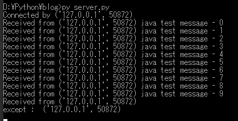
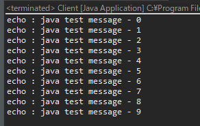
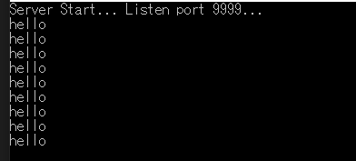
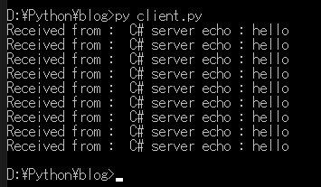

[Python] PythonとJavaのソケット通信する方法
こんにちは。明月です。
この投稿はPythonとJavaのソケット通信する方法に関する説明です。
以前にPythonとC#のソケット通信に関して説明したことがあります。
link - [Python] PythonとC#のソケット通信
それでPythonとJavaのソケット通信に関しても説明した方がよいではないかと思って作成します。
私の場合はJavaで開発すると思えば9割がトムキャットを利用するウェブプロジェクトになります。トムキャットを利用するのでウェブプロジェクトになりますが、内部でThreadを一つ作ってソケットサーバを待機してモバイルクライアントや各種アプリケーションが接続するサーバーを開発する時もあります。
つまり、内部重要なプログラムの流れはソケットサーバですが、ソケットサーバをコントロールプログラムはウェブプロジェクトで開発することです。
そのため、Javaでソケット通信する時が全然ないことではないので、そのようなC#みたいに模擬サーバやクライアントが必要です。
pythonのサーバソケットを作成しましょう。
link - [Python] 18. ネットワーク(Socket)通信する方法
# ソケットを使うためにsocketモジュールをimportする。
import socket, threading
# binder関数はサーバーからacceptしたら生成されるsocketインスタンスを通ってclientからデータを受信するとecho形で再送信するメソッドだ。
def binder(client_socket, addr):
# コネクションになれば接続アドレスを出力する。
print('Connected by', addr)
try:
# 接続状況でクライアントからデータ受信を待つ。
# もし、接続が切れちゃうとexceptが発生する。
while True:
# socketのrecv関数は連結されたソケットからデータを受信を待つ関数だ。最初に4byteを待機する。
data = client_socket.recv(4)
# 最初4byteは転送するデータのサイズだ。そのサイズはlittleエンディアンでbyteからintタイプに変換する。
length = int.from_bytes(data, "little")
# データを受信する。上の受け取ったサイズほど
data = client_socket.recv(length)
# 受信されたデータをstr形式でdecodeする。
msg = data.decode()
# 受信されたメッセージをコンソールに出力する。
print('Received from', addr, msg)
# 受信されたメッセージの前に「echo:」という文字を付ける。
msg = "echo : " + msg
# バイナリ(byte)タイプに変換する。
data = msg.encode()
# バイナリのデータサイズを計算する。
length = len(data)
# データサイズをlittleエンディアンタイプのbyteに変換して転送する。
client_socket.sendall(length.to_bytes(4, byteorder='little'))
# データをクライアントに転送する。
client_socket.sendall(data)
except:
# 接続が切れちゃうとexceptが発生する。
print("except : " , addr)
finally:
# 接続が切れたらsocketリソースを返却する。
client_socket.close()
# ソケットを生成する。
server_socket = socket.socket(socket.AF_INET, socket.SOCK_STREAM)
# ソケットレベルとデータタイプを設定する。
server_socket.setsockopt(socket.SOL_SOCKET, socket.SO_REUSEADDR, 1)
# サーバーは複数ipを使っているPCの場合はIPを設定して、そうではない場合はNoneや''で設定する。
# ポートはPC内で空いているポートを使う。cmdにnetstat -an | find "LISTEN"で確認できる。
server_socket.bind(('', 9999))
# server設定が完了すればlistenを開始する。
server_socket.listen()
try:
# サーバーは複数クライアントから接続するので無限ループを使う。
while True:
# clientから接続すればacceptが発生する。
# clientソケットとaddr(アドレス)をタプルで受け取る。
client_socket, addr = server_socket.accept()
# スレッドを利用してclient接続を作って、またaccept関数に行ってclientを待機する。
th = threading.Thread(target=binder, args = (client_socket,addr))
# スレッド開始
th.start()
except:
# コンソール出力
print("server")
finally:
# エラーが発生すればサーバーソケットを閉める。
server_socket.close()
データサイズの転送バイトはlittleエンディアンを使います。
次はクライアントをJavaで作成しましょう。
import java.io.InputStream;
import java.io.OutputStream;
import java.net.InetSocketAddress;
import java.net.Socket;
import java.nio.ByteBuffer;
import java.nio.ByteOrder;
public class Client {
// 実行関数
public static void main(String... args) {
// ソケット宣言
try (Socket client = new Socket()) {
// ソケットに接続するため、接続情報を設定する。
InetSocketAddress ipep = new InetSocketAddress("127.0.0.1", 9999);
// ソケット接続
client.connect(ipep);
// ソケット接続が完了すればinputstreamとoutputstreamを受け取る。
try (OutputStream sender = client.getOutputStream(); InputStream receiver = client.getInputStream();) {
// メッセージはfor文を通って10回にメッセージを送信する。
for (int i = 0; i < 10; i++) {
// 送信するメッセージを作成する。
String msg = "java test message - " + i;
// stringをbyte配列に変換する。
byte[] data = msg.getBytes();
// ByteBufferを通ってデータサイズをbyteタイプに変換する。
ByteBuffer b = ByteBuffer.allocate(4);
// byteフォマートはlittleエンディアンだ。
b.order(ByteOrder.LITTLE_ENDIAN);
b.putInt(data.length);
// データ長さを送信
sender.write(b.array(), 0, 4);
// データ送信
sender.write(data);
data = new byte[4];
// データを長さを受信
receiver.read(data, 0, 4);
// ByteBufferを通ってlittleエンディアンで変換してデータサイズを受け取る。
ByteBuffer b = ByteBuffer.wrap(data);
b.order(ByteOrder.LITTLE_ENDIAN);
int length = b.getInt();
// データサイズほど、バッファーを設定する。
data = new byte[length];
// データを受け取る。
receiver.read(data, 0, length);
// byteタイプの데이터をstringタイプに変換する。
msg = new String(data, "UTF-8");
// コンソールに出力する。
System.out.println(msg);
}
}
} catch (Throwable e) {
// エラーが発生する時コンソールに出力する。
e.printStackTrace();
}
}
}


上の例をみればclient(java)で10回のメッセージを送る時、メッセージにindex番号を付けて送信しました。順番通りに受信することを確認できます。サーバにはメッセージを受け取ってコンソールに出力して「echo:」メッセージを付けってclientに再送信したことも確認できます。
今回はJavaのサーバを作成してPythonのクライアントで接続します。
import java.io.InputStream;
import java.io.OutputStream;
import java.net.InetSocketAddress;
import java.net.ServerSocket;
import java.net.Socket;
import java.nio.ByteBuffer;
import java.nio.ByteOrder;
import java.util.concurrent.ExecutorService;
import java.util.concurrent.Executors;
public class Server {
// 実行関数
public static void main(String... args) {
// クライアントソケットを受け取るスレッドプールを作成した。スレッドプールは最大に10個のスレッドを運用できる。
ExecutorService clientService = Executors.newFixedThreadPool(10);
// serverSocketを宣言する。
try (ServerSocket server = new ServerSocket()) {
// ポートは9999でオープンする。
InetSocketAddress ipep = new InetSocketAddress(9999);
server.bind(ipep);
while (true) {
// クライアントが接続する時まで待機する。
Socket client = server.accept();
// クライアントが接続すればスレッドプールにスレッドが生成され、inputstreamとoutputstreamを受け取る。
clientService.submit(() -> {
try (OutputStream sender = client.getOutputStream();
InputStream receiver = client.getInputStream();) {
// 無限ループの待機
while (true) {
byte[] data = new byte[4];
// データ長さを受け取る。
receiver.read(data, 0, 4);
// ByteBufferを通ってlittleエンディアンタイプにデータ長さを受け取る。
ByteBuffer b = ByteBuffer.wrap(data);
b.order(ByteOrder.LITTLE_ENDIAN);
int length = b.getInt();
// データを受け取るバッファーを宣言する。
data = new byte[length];
// データを受け取る。
receiver.read(data, 0, length);
// byteタイプのデータをstringタイプに変換する。
String msg = new String(data, "UTF-8");
// コンソールに出力する。
System.out.println(msg);
// echoを付ける。
msg = "Java server echo : " + msg;
// stringをbyte配列タイプに変換する。
data = msg.getBytes();
// ByteBufferを通ってデータ長さをbyteタイプに変換する。
b = ByteBuffer.allocate(4);
// byteフォマートはlittleエンディアンだ。
b.order(ByteOrder.LITTLE_ENDIAN);
b.putInt(data.length);
// データの長さを送信
sender.write(b.array(), 0, 4);
// データを送信
sender.write(data);
}
} catch (Throwable e) {
// エラーが発生すればコンソールに出力する。
e.printStackTrace();
} finally {
try {
// エラーが発生すれば接続を終了する。
client.close();
} catch (Throwable e) {
e.printStackTrace();
}
}
});
}
} catch (Throwable e) {
// エラーが発生すればコンソールに出力する。
e.printStackTrace();
}
}
}
上のJavaでSocketServerクラスを利用してソケット通信サーバを作成しました。
今回はPythonでクライアントを作成しましょう。
# ソケットを使うためにsocketをimportする。
import socket
# 127.0.0.1のIPはローカルの意味だ。
HOST = '127.0.0.1'
# ポートはサーバーで設定した9999に接続する。
PORT = 9999
# ソケットを生成する。
client_socket = socket.socket(socket.AF_INET, socket.SOCK_STREAM)
# connect関数でサーバーに接続する。
client_socket.connect((HOST, PORT))
# 10回のループでsend、receiveをする。
for i in range(1,10):
# メッセージはjava hello messageで送信
msg = 'java hello message'
# メッセージをバイナリ(byte)タイプに変換する。
data = msg.encode()
# メッセージのサイズを計算する。
length = len(data)
# データサイズをlittleエンディアンタイプに変換してサーバーに送信する。
client_socket.sendall(length.to_bytes(4, byteorder="little"))
# データを送信する。
client_socket.sendall(data)
# サーバーからデータサイズを受信する。
data = client_socket.recv(4)
# データ長さはlittleエンディアンでintを変換する。
length = int.from_bytes(data, "big")
# データの長さを受信する。
data = client_socket.recv(length)
# データを受信する。
msg = data.decode()
# データをコンソールで出力する。
print('Received from : ', msg)
# ソケットリソースを返却する。
client_socket.close()


Clientでメッセージを作って10回のループでサーバにメッセージを送信します。その後、サーバにはメッセージのメッセージにechoの文字列を付けてclientでメッセージを送信します。
java server - python clientも問題なしでよくできます。
Javaサーバでエラーメッセージが表示される理由はclientで強制終了すればexceptionに発生します。Javaの60番目Exceptionでエラーメッセージが表示され、コンソールにエラーメッセージが表示されることです。
ここまでPythonとJavaのソケット通信する方法に関する説明でした。
ご不明なところや間違いところがあればコメントしてください。
- [Python] メール(smtplib)を送信する方法2020/07/27 18:38:43
- [Python] HttpConnection(requestsモジュール)でウェブサーバーで接続する方法2020/07/20 14:41:51
- [Python] Excel(openpyxl)を扱う方法2020/07/16 16:40:31
- [Python] ファイル圧縮、解凍(zipfile)する方法2020/07/14 19:14:22
- [Python] Apache cgiでPythonを使う方法2020/07/09 19:58:19
- [Python] Web serverを起動する方法(http.server)2020/07/09 00:13:13
- [Python] WebSocketを使う方法2020/07/07 17:29:18
- [Python] PythonとJavaのソケット通信する方法2020/07/03 18:35:50
- [Python] PythonとC#のソケット通信2020/07/01 19:28:22
- [Python] INI(環境設定ファイル)を扱う方法2020/06/30 18:26:01
- [Python] Jsonを扱う方法2020/06/29 19:18:15
- [Python] XMLファイルを扱う方法2020/06/26 19:18:14
- [Python] IOを利用してCSVファイルを扱う方法2020/06/25 18:20:30
- [C#] 57. コーティング規約2021/10/21 18:57:02
- [C#] 56. 値の初期化及び基本データ値(default)を設定する方法、そして原始データのnull処理、?と??の使い方2021/10/21 18:54:41
- [C#] 55.namespaceとusing、そしてpartialの使い方2021/10/21 18:51:39
- [C#] 54. Reflection機能を使い方 - Attribute2021/10/20 19:29:31
- [Project design] プログラム制作(コーディング) - クラス作成方法2021/10/20 19:28:09
- [C#] 53. Reflection機能を使い方 - Propertyとevent2021/10/19 21:02:58
- [Project design] プログラム制作(コーディング) - 関数作成方法2021/10/19 21:01:32
- [CentOs] ジェンキンス(Jenkins)をインストールする方法2021/10/18 18:28:58
- [Project design] 詳細設計(インターフェース設計と抽象化作業)2021/10/18 18:23:15
- [Project design] 基本設計(画面設計とDB設計)2021/10/17 21:21:11
- [Design pattern] 1-4. デザインパターンの抽象ファクトリーパターン(Abstract factory pattern)2021/10/15 19:31:03
- [Project design] 要件定義(要求事項整理)2021/10/15 19:28:58
- [C#] 52. Reflection機能を使い方 - Variable2021/10/15 19:27:37
- [Project design] プロジェクトを工程(ウォーターフォール vs アジャイル)2021/10/14 18:36:04
- [C#] 51. Reflection機能を使い方 - Method2021/10/14 18:34:21